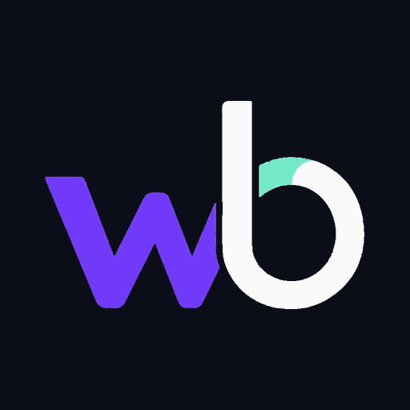

01 / CÓDIGO ABIERTO
Wrbycker Agent Lab
Un laboratorio abierto para experimentar con agentes de IA, herramientas de Python, permisos claros y supervisión humana.
Conocer Agent Lab ↗Wrbycker es un ecosistema creativo e independiente. Desarrollamos herramientas, exploramos inteligencia artificial y damos vida a personajes y proyectos digitales con identidad propia.

Desde software gratuito hasta experiencias creativas, cada proyecto tiene su propósito y conserva nuestra identidad.
Un laboratorio abierto para experimentar con agentes de IA, herramientas de Python, permisos claros y supervisión humana.
Conocer Agent Lab ↗Tu espacio de trabajo para organizar tareas, guardar ideas, crear fichas de personajes y preparar prompts. Funciona desde el navegador y guarda los datos localmente.
Abrir Control Center ↗Personajes virtuales originales, historias, ideas visuales y experimentación creativa con inteligencia artificial.
Explorar proyectos creativos ↗Herramientas y servicios externos de IA que compartimos por separado. Algunos destinos pueden ser para mayores de 18 años.
Ver recomendaciones y avisos ↗Una guía no es un molde. Dos personas pueden partir de la misma tecnología, aprender el mismo proceso o explorar una idea similar y crear experiencias completamente distintas. La diferencia está en las decisiones, la intención y la identidad que cada quien conserva.
Wrbycker no busca ser otra página de IA: reunimos desarrollo, herramientas gratuitas, personajes e historias originales para experimentar con criterio y mantener el control humano.
Encuentra nuestros proyectos, novedades creativas y enlaces desde el perfil principal.
Aviso: algunos enlaces externos pueden ser de afiliado y generar una comisión. Los proyectos de software gratuitos no requieren usar servicios comerciales.